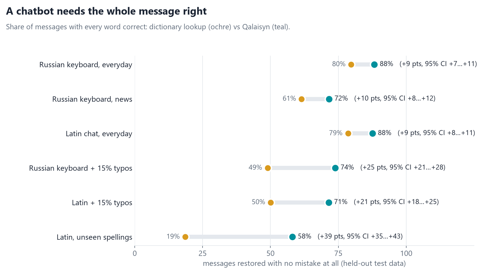
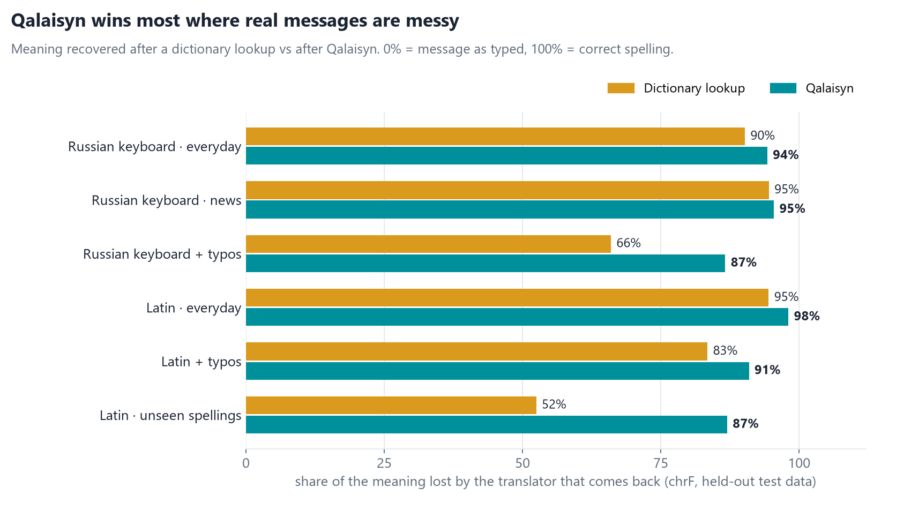

An engine inside chatbots and translators that understands Kazakh the way people really type it.
Most phones in Kazakhstan have a Russian keyboard with no keys for ә, ғ, қ, ң, ө, ұ, ү, і. People type the closest Russian letter, and the AI behind bank, airline and government chats misreads them. Qalaisyn puts the letters back before the AI reads the message.
✓ Tested on 70 real messages written by a native Kazakh speaker — words wrong: 20% with a dictionary, 13% with ChatGPT, 12% with QalaisynLoading the engine into your browser (about 20 MB, once)…
Inside an airline's support chatbot
Qalaisyn puts the letters back
Qalaisyn runs inside the chatbot, between the message and the AI. The passenger never sees it and changes nothing.
other systems.
Why one missing letter matters
For a Kazakh speaker the meaning is obvious. For an AI trained on standard Kazakh, a missing letter can turn one word into another.
Gulnar, 62, lives in a village in Turkistan region. One night her grandson has a fever. Her phone has only a Russian keyboard, so she texts the clinic's chatbot the only way she can:
She did nothing wrong. She typed the way millions of people type every day. Qalaisyn makes sure the AI hears her.
A Russian keyboard has no ө, so “go through” is typed as the word for “fire”. In the airline example above, the word for airplane (ұшақ) loses ұ and қ, and the translator guesses “rumor”.
It is like Spanish without accents, where papá (dad) and papa (potato) become the same word, except that in Kazakh this happens in almost every second word.
of words typed this way are misspelled in our tests. Over 13 million people speak Kazakh, and banks, airlines, clinics and e-government are moving their support to AI first. Every misread message is a wrong answer, a lost customer or a delayed emergency.
The same happens wherever phones drop letters: Kyrgyz, Uzbek, Azerbaijani, Turkish, Vietnamese.
Where Qalaisyn lives
Qalaisyn runs inside a company's system, between the incoming message and the AI that answers, like a spell-checker inside a keyboard. Customers never see it, and they don't have to change anything.
“ушак кешигип жатыр ма”
“ұшақ кешігіп жатыр ма”
in a few milliseconds
// how a company adds it: one call before its own AI (this page runs exactly this engine) const text = qalaisyn.restore(message); // "ушак кешигип жатыр ма" → "ұшақ кешігіп жатыр ма" const reply = supportBot.answer(text);
Want to see it inside a real website? Install the browser extension and use it in Google Translate, Gmail or any chat.
Try it on any website
To show that the engine works inside other systems, not only on this page, we packed the same engine into a browser extension for Chrome and Edge. Click into any text field, on Google Translate, Gmail or WhatsApp Web, type the way you always do, and press Alt+Q. The letters are put back right in that field, with no internet needed.
Install in one minute
- Download the extension (6 MB) and unzip it.
- Open
chrome://extensions(oredge://extensions) and turn on Developer mode. - Click Load unpacked and choose the unzipped
qalaisyn-extensionfolder. - Open Google Translate, type
ушак кашан конадыand press Alt+Q.
What we saw in Google Translate
Even Google Translate, one of the biggest translators, reads these as “rumor” and “charm”, and leaves Latin-typed Kazakh untranslated; with Qalaisyn inside it gets them right. Big services already cope with many messages; Qalaisyn fixes the words they still misread, and matters most for the smaller AI models inside everyday chatbots.
Not only Kazakh
Kyrgyz, Uzbek, Azerbaijani, Turkish and Tatar speakers drop their own letters in the same way. Qalaisyn learns a language from ordinary text and needs no hand-written rules, so we ran the same code, unchanged, on Kyrgyz (ң, ө, ү), trained on 677,030 sentences from Kyrgyz Wikipedia.
of Kyrgyz words are wrong as typed in chat, and after Qalaisyn. A simple dictionary gets 6%.
of meaning recovered from Kyrgyz typed in Latin letters, measured with a translator.
on a Russian keyboard. Here, honestly, a simple dictionary does about as well. Real Kyrgyz chat messages are our next test.
See it inside a support chatbot
The same simple support bot twice. On the left it reads the message as typed; on the right Qalaisyn runs inside it first. Pick a situation.
Support bot today (reads the message as typed)
Same bot with Qalaisyn inside
Everyday messages
Real-life messages typed the way people text, with what a translator understands before and after Qalaisyn. Translations are from Meta's NLLB-200; the restored text is computed live in your browser.
Look inside the engine
In real use there is no text box: the engine runs automatically inside a company's chatbot, translator or search. This box only lets you watch what it does to a message. Type any Kazakh message on a Russian keyboard or in Latin letters: restored letters are highlighted, and dotted words are the ones Qalaisyn is unsure about (a chatbot can ask the customer or use both options).
It updates live as you type. Everything runs on your device; nothing is sent anywhere.
Does it work? Results on held-out data and real messages
Measured on held-out test sentences (Tatoeba, FLORES-200) typed in six chat styles, and on real messages written by a native speaker. Full method, numbers and confidence intervals are in the notebook.
Checked on real messages from a native speaker
written by a native speaker70 everyday messages written by a native Kazakh speaker exactly as they text, with heavy slang, Russian words and shortened forms. Share of words still wrong:
messages with every word right on a Russian keyboard: Qalaisyn vs a dictionary lookup
the same with typos, where a dictionary breaks down
of Qalaisyn's mistakes are among the 6% of words it marks as unsure


How the engine decides
List the possible words
Each typed word could be several Kazakh words: “от” → от (fire) or өт (go), “ушак” → ұшақ (airplane). Qalaisyn lists the real words it could be.
Pick the most likely sentence
A language model trained on 1.5 million Kazakh sentences knows which words go together (“plane … late”); the Viterbi algorithm picks the best whole sentence.
Ask only when unsure
Every word gets a probability. Below 90% it becomes a suggestion instead of a silent change. Russian words like “короче” are left alone.
Why not just ask ChatGPT?
We compared them: on real messages from a native speaker, Qalaisyn puts the letters back more accurately than ChatGPT. And it is built for a job a giant model cannot do cheaply: a small, instant step that every message goes through before any AI sees it.
Free and fast
A large model is paid per message and takes seconds. Qalaisyn costs nothing to run and takes milliseconds, so a bank can pass millions of messages through it.
Private
It runs on the company's own server, or even inside a web page like this one. Customers' messages are not sent to another company, and no internet connection is needed.
Works with them
It can sit in front of any AI, large models included, and hand it clean Kazakh, or call it only for the few words Qalaisyn marks as unsure.
Qalaisyn makes fewer mistakes than ChatGPT
Real messages from our native speaker, sent to ChatGPT (free version) with the instruction to put the letters back:
Share of words still wrong. A free 21 MB engine that runs offline in milliseconds is more accurate than a giant online model. (Before two rules added after reading these errors, Qalaisyn had 16.1%.)
Putting dropped letters back has been studied before, for languages such as Vietnamese and Romanian. What is new here is Kazakh the way people really chat: a Russian keyboard or Latin letters, slang, Russian words and typos, and an engine that says when it is unsure.
Where it still goes wrong
We report failures as carefully as successes.
жуким жогалып кетти (my luggage is lost) → Qalaisyn wrote тұқым (“seed”) instead of жүгім. Both are real words; the model had too little context.
ажемнин (my grandmother's) became әлемнің (of the world): both are real words one letter apart, and the rest of the message did not help.
Chat forms like болад (болады) and жберш (жіберші) are now expanded, but rarer ones like кейн (кейін) or келейн (келейін) are not yet.